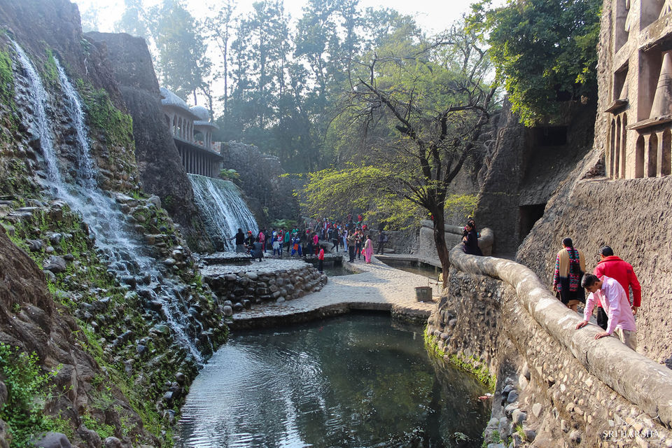
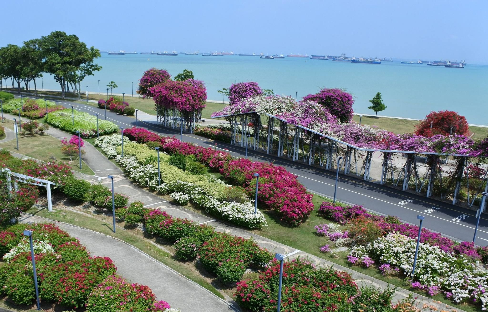
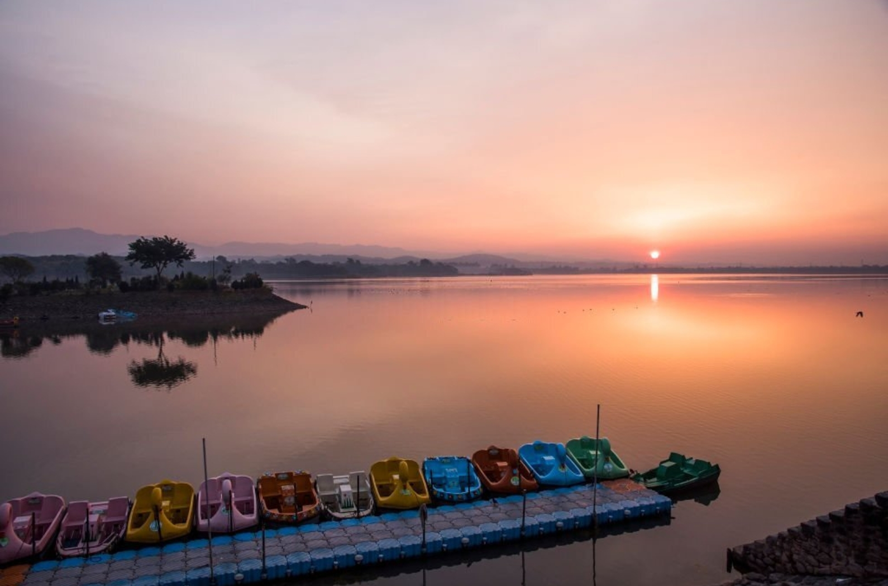
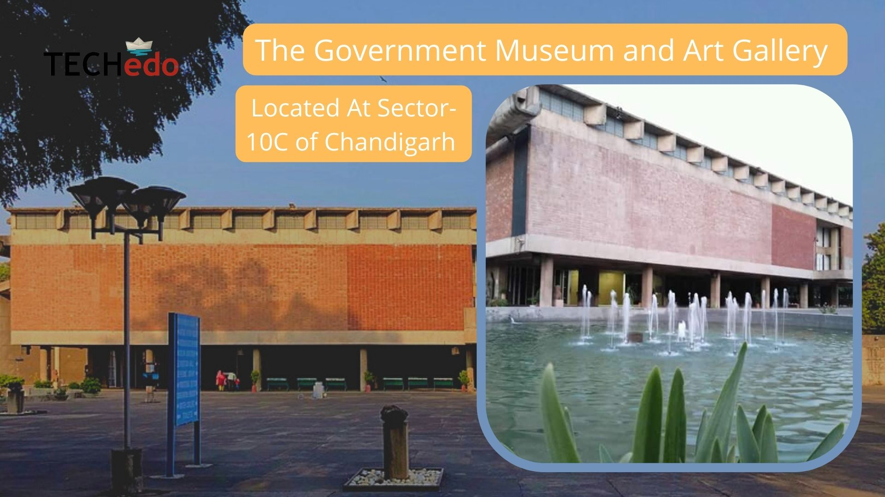
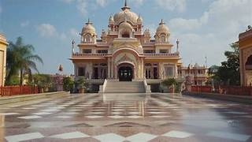

Gardens – Rock Garden, Rose Garden & Bougainvillea Garden
Chandigarh is known as the “City Beautiful,” and its gardens are a major highlight of the city’s urban planning. The Rock Garden, created by Nek Chand, is a unique attraction made entirely from recycled materials such as broken ceramics and scrap. The Zakir Hussain Rose Garden is the largest rose garden in Asia, featuring over 1,600 varieties of roses. Bougainvillea Garden is famous for its vibrant flowers and peaceful environment, making it ideal for relaxation and nature walks.



Sukhna Lake
Sukhna Lake is one of Chandigarh’s most picturesque landmarks. Created in 1958 at the foothills of the Shivalik Hills, it is a man-made reservoir that offers scenic views and recreational activities such as boating, jogging, and bird watching. The lake is especially popular during sunrise and sunset and plays an important role in maintaining the city’s ecological balance.

Government Museum & Art Gallery
The Government Museum and Art Gallery in Chandigarh is a major cultural institution showcasing India’s rich artistic and historical heritage. It houses Gandharan sculptures, miniature paintings, modern Indian art, and archaeological artifacts. The museum also serves as an educational center for students, researchers, and art lovers.

Religious Places – ISKCON Temple & Gurudwara Nada Sahib
Chandigarh reflects cultural harmony through its important religious sites. The ISKCON Temple, dedicated to Lord Krishna, offers a peaceful spiritual atmosphere with devotional activities and festivals. Gurudwara Nada Sahib, associated with Guru Gobind Singh, is a revered Sikh pilgrimage site known for its calm environment and community service through langar.
